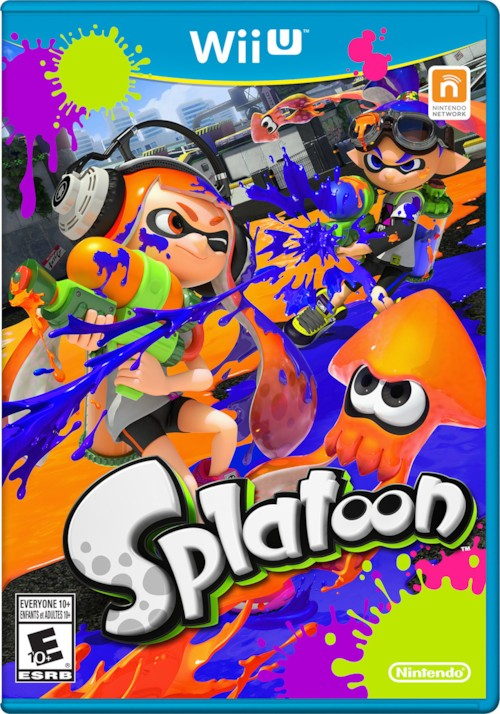

- SPLATOON
- SPLATOON2
SPLATOON
닌텐도
에서 개발한 TPS 게임이자, 스플래툰 시리즈의 첫작이다.
으로 오랜만에 등장한 닌텐도 신규 IP로, 마리오 카트에 필적
하는 마케팅 비용을 책정받을 만큼 회사가 신임하는 IP다.
일본에서는 순조로운 판매를 기록한다. 닌텐도의 핵심 IP군에 빠르게
정착하였으며, 슈퍼 스매시 브라더스 4에도 DLC 유저 아이템으로
참전했고 얼티밋에선 아예 신규캐로 추가되었다. 본 문서에선 각종
명칭을 일본어

- 온라인으로 최대 4대4 매치를 할 수 있다.
- 팀원은 기본적으로 매번 랜덤이며 어떤 방식으로든 선택할 수 없다. 게다가 음성 채팅도 지원되지 않아 오직 서로의 실력만 믿고 게임을 해야 하기 때문에 이에 대한 불만도 많다.
- 잉크건으로 적을 공격하여 죽일 수 있다. 킬 수는 게임 승패에 영향을 주지 않지만 죽은 상대는 잠시동안 맵에서 사라진다.